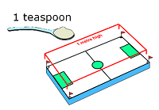
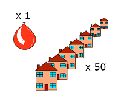

An Introduction to Air Sampling
ISO 9001
Health and Safety in the workplace involves a wide range of potential hazards
Airborne hazards from gases, vapours, dusts and fibres can all cause potentially life threatening illnesses affecting the lungs, kidneys and liver. A worker experiencing airborne dust hazards without protection Air sampling is a vital method of monitoring workers' exposure to these potential airborne workplace hazards. Air sampling is relevant to almost every industry, from flour dust exposure in a bakery to chemical vapour exposure in a factory. Every year in the UK, around 13,000 people die from diseases which were caused by the work that they do, or used to do. By comparison, in 2017/2018 only 144 workers were killed at work due to fatal injuries (source: HSE). By consistently measuring the concentration of airborne contaminants steps can be taken to reduce workers' exposure, thereby helping to prevent chronic respiratory diseases such as asthma, as well as occupational cancers.
What is Air Sampling?
Air sampling is carried out to ensure that workplace or environmental air is meeting regulatory standards and to help Occupational Hygiene and Health & Safety professionals assess employee exposure to airborne hazards. An example of an airborne dust hazard - dust from grinding stone Regulatory authorities, such as the HSE in the UK or OSHA in the USA, apply limits for exposure to most substances deemed hazardous to worker’s health. The HSE terms these limits Workplace Exposure Limits (WELs) and they are defined as the maximum concentration of a hazardous airborne substance that a worker may be exposed to over a defined period such as an 8-hour shift. WELs apply to anybody working within an environment where hazardous substances are present, and are based on personal sampling, not static / environmental – however, this does not mean that limits cannot apply under these circumstances. WELs are published in the document called EH40, a guidance document which is freely available to download from the HSE’s website www.hse.gov.uk Where there is a WEL there will be an approved method of sampling written by a regulatory authority such as the HSE. Where there is no specific method for a particular hazard, there are often methods for the type of contaminant - such as MDHS 14/4 for general dusts.
Types of contaminant
Control of Sustances Hazardous to Health Regulations 2002 (COSHH) covers substances that are hazardous to health. Most hazardous materials fall into three main categories: dusts and particulates, gases and vapours, or bioaerosols. A site may well have several types of contaminants.
Dusts:
Fibres:
Gases and Vapours:
Bioaerosols:
Measurements
Once measured, the contaminants are expressed as milligrams per cubic metre (mg/m3) for particulates and parts per million (ppm) for gases. For instance, the maximum workplace exposure limit for toal (inhalable) dust is 10 mg/m3 over an 8 hour period.
 One milligram per cubic metre (mg/m3) is approximately the same as one teaspoon of dust spread over the area of a football field to a height of one metre
 One part per million (ppm) is approximately the same as the contents of a party balloon compared to the volume of air inside 50 three bedroom houses